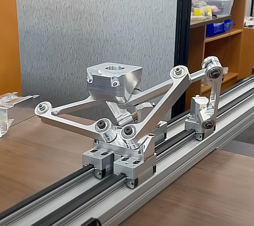
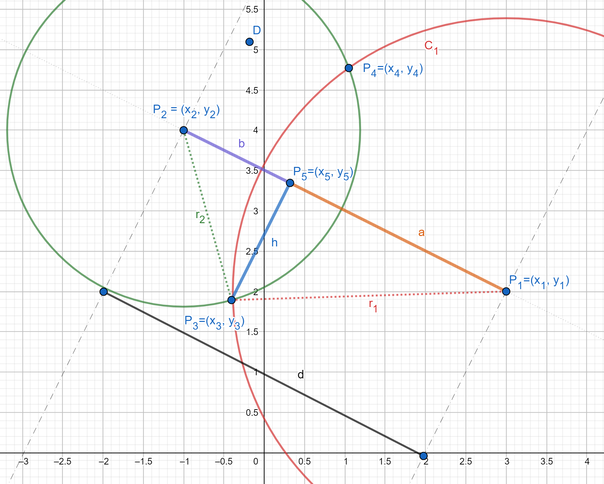
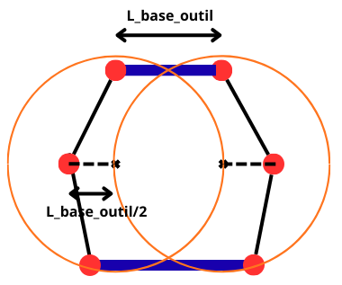
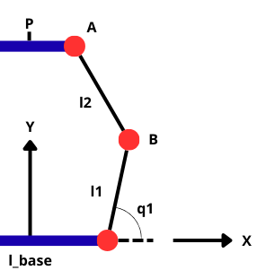

Robotique Parallele
La robotique parallèle désigne une catégorie de robots dont la structure mécanique se compose de chaînes cinématiques en parallèle. Cette architecture, offre une grande rigidité, une précision élevée et une dynamique interessante grâce à la répartition des efforts entre plusieurs actionneurs proche de la base. Les robots parallèles sont particulièrement utilisés dans le pick-and-place, les simulateurs de mouvement ou certains procédés d’usinage.
Exemple de robot avec une structure parallele (tripetron parallele)
Calcul MGI, MGD et jacobienne
Tout les modèles géométrique de robots paralleles ne se calcul pas de la même manière. Cependant pour les robot parallele les plus commun comme les robots de type Delta, ou de type Scara parallele les calculs se ressemble beaucoup.
Exemple du Robot Scara Parallele
Je vais détailler la méthode avec l'exemple le plus simple, néanmoins je détaille aussi les calculs pour un robot de type Delta ici si cela vous interesse.
Différence entre respectivement, un robot scara classique et parallele
MGD
Le MGD d'un robot parallele n'est pas très interessant puisque cela reviens simplement à calculer un sinus et un cosinus
Si on considère que le l'origine du repère est entre les deux articulations.
\( \text{PosYCoude1} = l_1 \sin(q_1) \)
\( \text{PosYCoude2} = l_1 \sin(q_2) \)
\( \text{PosXCoude1} = \text{espacement_moteur}/2 - l_1 \cos(q_1) \)
\( \text{PosXCoude2} = -\,\text{espacement_moteur}/2 - l_1 \cos(q_2) \)
Néanmoins si l'on veut modéliser entierement la liaison entre les deux bras et connaitre la position de l'effecteur final on doit trouver les intersections entre deux cercles
Schema intersection entre deux cercles
Pour comprendre comment faire ce calcul avec tout les détails je vous renvoie vers le très bon Blog de Lulu où on retrouve ce calcul et plein d'autres sujets très interessants !
Il se peut parfois qu'un robot ait une base d'outil et donc que les deux bras ne se rejoigne pas au même endroit (comme sur un robot Delta). Ainsi pour avoir la position de l'effecteur final (si on considere que c'est le centre de la base outil) on calcul l'intersection au niveau des coudes ± la moitié de la longueur de la dite base :
Schema Tips base d'outil
MGD robot Scara classique et parallele sur Python
import numpy as np
###################################
# SCARA DE BASE
###################################
q2 = 1.9551931012905357
q1 = -0.5139489416444618
l1 = 10 # longueur des joints
l2 = 10
posX_coude = l1*np.cos(q1)
posY_coude = l1*np.sin(q1)
X = posX_coude + l2*np.cos(q1+q2)
Y = posY_coude + l2*np.sin(q1+q2)
print("position scara de base :",X,Y, "(pas d'espacement moteur)")
###################################
# SCARA PARALLELE
###################################
q1 = -1.7719467735920662 # en rad
q2 = -0.33767524734527343
r1 = 10
r2 = 10
motor_space = 3 # espacement/2 entre les deux articulations
PosYCoude1 = l1*np.sin(q1)
PosYCoude2 = l1*np.sin(q2)
# on considere que le 0,0 est entre les deux moteurs d'ou le signe -
PosXCoude1 = motor_space - l1*np.cos(q1)
PosXCoude2 = - motor_space - l1*np.cos(q2)
# Calcul intersection de deux cercle dans le plan YZ
# Paramètres des cercles
P1 = np.array([PosXCoude1, PosYCoude1])
P2 = np.array([PosXCoude2, PosYCoude2])
# Distance entre centres
d = np.linalg.norm(P2 - P1)
# Vérification existence intersection
if d > r1 + r2 or d < abs(r1 - r2):
print("Pas d'intersection réelle.")
else:
# a et h (méthode géométrique)
a = (r1**2 - r2**2 + d**2) / (2*d)
h = np.sqrt(r1**2 - a**2)
# Point intermédiaire P5
P5 = P1 + (a/d) * (P2 - P1)
# Coordonnées des intersections
offset = h/d * np.array([P2[1] - P1[1], -(P2[0] - P1[0])])
P3 = P5 + offset
P4 = P5 - offset
print("Intersection 1 :", P3)
print("Intersection 2 :", P4)
MGI
Pour le MGI d'un robot parallele on suit presque une même méthode à chaque fois
Schema de résolution du MGI pour un robot parallele
On identifie la position de A et B :
\[ A = \begin{bmatrix} l_{\text{base}} + x \\ y \end{bmatrix}, \qquad B = \begin{bmatrix} l_{\text{base}} + l_1 \cos(q_1) \\ l_1 \sin(q_1) \end{bmatrix} \]
Ainsi :
\[ \|AB\| = l_2^{\,2} \]
En développant :
\[ (\,l_{\text{base}} + l_1\cos(q_1) - l_{\text{base}} - x\,)^2 + (\,l_1\sin(q_1) - y\,)^2 = l_2^{\,2} \]
En notant \( c_1 = \cos(q_1) \) et \( s_1 = \sin(q_1) \), on obtient :
\[ -2 l_1 x\, c_1 \;-\; 2 l_1 y\, s_1 = -x^{2} - y^{2} - l_1^{2} + l_2^{2} \]
On retrouve une équation du type 2 :
\[ U c_i + V s_i + W = 0 \]
avec :
\[ U = -2l_1 x,\qquad V = -2l_1 y,\qquad W = x^{2} + y^{2} + l_1^{2} - l_2^{2} \]
On résout avec la méthode des demi-angles tangents :
\[ t_i = \tan\bigl(q_i/2\bigr),\qquad c_i = \frac{1 - t_i^{2}}{1 + t_i^{2}},\qquad s_i = \frac{2t_i}{1 + t_i^{2}} \]
En substituant :
\[ U(1 - t_i^{2}) + 2V t_i + W(1 + t_i^{2}) = 0 \]
C’est-à-dire :
\[ (W - U)\,t_i^{2} + 2V t_i + (W + U) = 0 \]
En resolvant le polynome de degré deux on obtient alors les solutions :
\[ t_i = \frac{-V \pm \sqrt{U^{2} + V^{2} - W^{2}}}{\,W - U\,} \]
Et finalement :
\[ q_i = 2\,\mathrm{atan2}(t_i) \]
Pour avoir l'autre bras du robot scara, on refait ce calcul en faisant bien attention aux signes dans les nouvelles position de A et B !
Resultat de la modélisation avec le code
MGI robot Scara classique et parallele sur Python
import numpy as np
import matplotlib.pyplot as plt
# paramètres :
# position voulu
x1 = 10
y1 = 5
# longueur des joints
l1 = 10
l2 = 10
###################################
# SCARA DE BASE
###################################
# equation
b_q2 = np.arccos((x1**2 + y1**2 -l1**2 -l2**2)/(2*l1*l2))
b_q11 = np.atan2(y1,x1) - np.arcsin((np.sin(b_q2)*l2)/np.sqrt(x1**2+y1**2)) # 1ere sol coude en bas
b_q12 = np.atan2(y1,x1) + np.arcsin((np.sin(b_q2)*l2)/np.sqrt(x1**2+y1**2)) # 2eme sol coude en haut
# position du coude 1
x11 = l1 * np.cos(b_q11)
y11 = l1 * np.sin(b_q11)
# position du coude 2
x12 = l1 * np.cos(b_q12)
y12 = l1 * np.sin(b_q12)
# position de l'effecteur 1
x21 = x11 + l2 * np.cos(b_q11 + b_q2)
y21 = y11 + l2 * np.sin(b_q11 + b_q2)
# position de l'effecteur 2
x22 = x12 + l2 * np.cos(b_q12 - b_q2)
y22 = y12 + l2 * np.sin(b_q12 - b_q2)
# plot
fig, ax = plt.subplots()
ax.plot([0, x11, x21], [0, y11, y21], '-o', linewidth=3, markersize=8, label='Coude bas') # bras 1
ax.plot([0, x12, x22], [0, y12, y22], '-o', linewidth=3, markersize=8, label='Coude haut') # bras 2
ax.set_aspect("equal", "box")
ax.set_xlabel('X (m)')
ax.set_ylabel('Y (m)')
ax.legend()
ax.grid()
plt.tight_layout()
plt.show()
###################################
# SCARA PARALLELE
###################################
# position voulu
y2 = 5
z2 = 10
# longueur des joints
l1 = 10
l2 = 10
# espacement entre les deux articulations
espace = 6
motor_space = espace / 2
yini = motor_space # pour le plot
# ----------------------------
# Coefficients (E, F, G)
# ----------------------------
def compute_EFG(y_base):
dy = y2 - y_base
dz = z2
D = dy*dy + dz*dz
E = 2*l1*dy
F = 2*l1*dz
G = l2*l2 - l1*l1 - D
return E, F, G
# # on considere que le 0,0 est entre les deux moteurs d'ou le signe -
E1, F1, G1 = compute_EFG(+motor_space)
E2, F2, G2 = compute_EFG(-motor_space)
# ----------------------------
# Calcul des t(i) et q(i)
# ----------------------------
def _calc_t(E, F, G, elbow_up=True):
disc = E**2 + F**2 - G**2
if disc < 0:
raise ValueError("Position hors du domaine d’atteinte : discriminant négatif")
# + ou - selon coude haut/bas
s = +1 if elbow_up else -1
t = (-F + s*np.sqrt(disc)) / (G-E)
return 2*np.arctan(t)
q1 =_calc_t(E1, F1, G1, elbow_up=True)
q2 = _calc_t(E2, F2, G2, elbow_up=False)
# ----------------------------
# Position des coudes
# ----------------------------
y11 = motor_space + l1*np.cos(q1)
z11 = l1*np.sin(q1)
y12 = -motor_space + l1*np.cos(q2)
z12 = l1*np.sin(q2)
# ----------------------------
# Tracé 2D Y-Z
# ----------------------------
fig2, ax2 = plt.subplots()
# Base -> coudes
ax2.plot([yini, y11], [0, z11], 'b-o', label='Bras gauche')
ax2.plot([-yini, y12], [0, z12], 'r-o', label='Bras droit')
# Coudes -> effecteur
ax2.plot([y11, y2], [z11, z2], 'b-o')
ax2.plot([y12, y2], [z12, z2], 'r-o')
# Vérifications des longueurs
print("Longueur coude1->effecteur :", np.linalg.norm([y2 - y11, z2 - z11])) # doit être l2
print("Longueur coude2->effecteur :", np.linalg.norm([y2 - y12, z2 - z12])) # doit être l2
print("Longueur base->coude1 :", np.linalg.norm([y11 - yini, z11 - 0])) # doit être l1
print("Longueur base->coude2 :", np.linalg.norm([y12 + yini, z12 - 0])) # doit être l1
ax2.set_xlabel('Y')
ax2.set_ylabel('Z')
ax2.set_aspect('equal')
ax2.grid(True)
ax2.legend()
plt.tight_layout()
plt.show()
Jacobienne
Pour un robot parallèle, la relation générale entre la vitesse de la plateforme et les vitesses articulaires des bras s'écrit :
\[ A \, dx = B \, dq \]
- \(dx\) : vitesse généralisée de la plateforme (translation + rotation)
- \(dq\) : vitesses des articulations des bras
- \(B\) : contribution des bras au mouvement de la plateforme (souvent appelé Jc)
- \(A\) : matrice de transformation qui relie la vitesse généralisée de la plateforme à la vitesse d'un point attaché sur le bras
On calcule \(B\) de la même manière que la jacobienne d'un robot sériel (les points de \(position_i\) étant la base des articulations et \(x_f \) le centre de la plateforme / base outil).
Cas translation seulementSi la plateforme ne fait que de la translation (comme pour un robot Delta 3 axes), tous les points se déplacent comme le centre :
\[ dx_{\text{point}} = dx_{\text{plateforme}} \quad \Rightarrow \quad A = I \]
Donc, la Jacobienne complète d'un tel robot parallèle s'écrit alors :
\[ J = B \]
Cas rotation + translationSi la plateforme peut tourner, un point \(K\) sur la plateforme a une vitesse :
\[ dx_{K} = v + \omega \times \vec{d} \]
avec \(\vec{d} = \vec{PK}\), le vecteur allant du centre de la plateforme \(P\) au point \(K\).
En utilisant le cross-operator, le produit vectoriel se réécrit comme une multiplication matricielle :
\[ dx_{\text{point}} = v + [\vec{d}]_\times \, \omega \]
Le produit vectoriel peut s’écrire sous forme matricielle :
\[ [\vec{d}]_\times = \begin{bmatrix} 0 & -d_z & d_y \\ d_z & 0 & -d_x \\ -d_y & d_x & 0 \end{bmatrix} \]
Pour exprimer cette relation sous forme matricielle vis-à-vis de la vitesse généralisée \(\begin{bmatrix} v \\ \omega \end{bmatrix}\), on combine translation et rotation dans une seule matrice :
\[ dx_{\text{point}} = \underbrace{[ I \quad -[\vec{d}]_\times ]}_{A} \begin{bmatrix} v \\ \omega \end{bmatrix} \]
Donc, la Jacobienne complète d'un tel robot parallèle s'écrit alors :
\[ J = A^+ \, B \]
Avec \(A^+ \) la pseudo-inverse de la matrice \(A\) (notation standard de Moore-Penrose)
Sources annexes :
Solutions des Équations Types utilisées en robotiques
Eurobots.fr site de revente de robot d'occasions